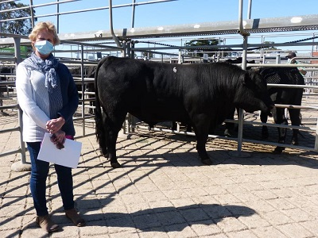
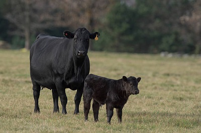

Bushfarm, like most farms, is a dynamic enviornment. We'll do our best to keep you updated on our news through this News. Here you can read about new arrivals and sales of our preimum burebred animals.
21/05/2021/ Bull Sold
Angus Lord Shannon was sold at sale event on Wednesday at Drumlish, Co. Longford. There were great animals for auction and we were very happy with the sale price of €3,800. Lord Shannon has moved to the Smyth's Dairy Farm in Gorey Co. Wexford and we wish them every success.

15/04/2021/ New Calf Born
We have welcomed the newest edition to the farm. This fine young bull calf was born unassisted over the weekend and both mum and calf are walking around looking happy and healthy. The calf sired by our own Angus Lord Bohey prooving his reliability and calving pegree.

12/02/2021/ Bull Sold
Angus Lord Shannon was sold at sale event on Wednesday at Drumlish, Co. Longford. There were great animals for auction and we were very happy with the sale price of €3,800. Lord Shannon has moved to the Smyth's Dairy Farm in Gorey Co. Wexford and we wish them every success.